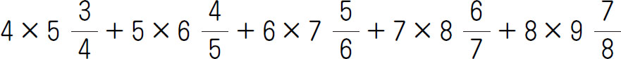
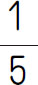
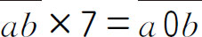
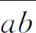
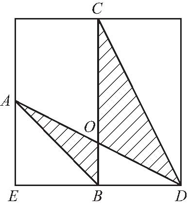
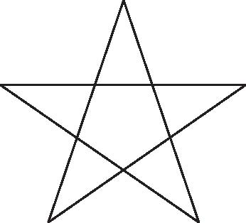
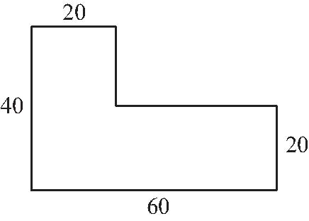
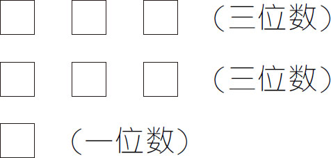

1．计算：

＝_____．2．对自然数a ，b ，规定a △b ＝a ÷b ×2＋3，则702△6＝_____．
3．计算：666.66×6666.7＋99999×22.222＝_____．
4．在一次英语比赛中，得90分的有12人，占参赛总人数的

，如果这12人的得分之和是所有人的得分之和的22.5％，那么这次英语比赛的平均分是_____．5．如果

，那么
等于___．6．甲、乙两个电动玩具车同时从轨道的两端相对而行，甲车每秒行5厘米，乙车第一秒行1厘米，第二秒行2厘米，第三秒行3厘米……这样两车相遇时，走的路程相同．则轨道长___厘米．
7．在算式A ×（B ＋C ）＝110＋C 中，A 、B 、C 是三个互不相等的质数，那么B ＝_____．
8．如图所示，A 、B 、C 都是正方形边上的中点，△COD 比△AO B 大15平方厘米．△A O B 的面积为___平方厘米．

第8题
9．五年级（1）班的同学进行数学测试，根据前五次检测的平均成绩是80分，他想使成绩再提高一些，那他第六次考___分才能使这六次的平均成绩达到82分．
10．最小的质数与最接近100的质数的乘积是_____．
11．某个七位数2000□□□能同时被1、2、3、4、5、6、7、8、9整除，那么最后三位是_____．
12．图中的五角星一共有___条线段．

第12题
13．把下图四等分，要求剪成的每个小图形形状、大小都一样．除了剪正方形外，还可以怎样剪？

14．甲、乙两个水管单独开，注满一池水，分别需要16小时和10小时.丙水管单独开，排一池水要8小时．若水池没水，同时打开甲、乙两水管，5小时后，再打开排水管丙，问水池注满还要多少小时？
15．在一个600米的环形跑道上，兄弟两人同时从同一个起点按顺时针方向跑步，两人每隔12分钟相遇一次，若两个人速度不变，还是在原来出发点同时出发，哥哥改为按逆时针方向跑，则两人每隔4分钟相遇一次，两人跑一圈各要多少分钟？
16．五年级有47名学生参加一次数学竞赛，成绩都是整数，满分是100分．已知3名学生的成绩在60分以下，其余学生的成绩均在75～95分．问：至少有几名学生的成绩相同？
17．试将1，2，3，4，5，6，7分别填入下面的方框中，每个数字只用一次，使得这三个数中任意两个都互质．已知其中一个三位数已填好，它是714，求其他两个数．
